![]()
Código
## Leemos los datos:
adhd_data = read.delim("data/taskA.txt")
## Menores de edad
adhd_data_menores = subset(adhd_data, edad < 18)
## Adhd status
table(subset(adhd_data_menores, select=adhdstatus))adhdstatus
0 1
72 70 Ejercicio #1
En este estudio de caso analizaremos datos provenientes de una tarea repetitiva en niños y adultos diagnosticados y no diagnosticados en Trastorno de Déficit de Atención con Hiperactividad (ADHD en inglés), residentes en Barranquilla.
La tarea consiste en 50 intentos cuya respuesta se cuantifica en una escala de 1 a 5. Por simplicidad, valores diferentes a 5 se consideran no exitosos.
A continuación se presentan una serie de preguntas que deben responder. Pueden trabajar en grupos de máximo 3 personas.
Fecha de entrega: Abril 1, 2024.
Los datos se encuentran disponibles aquí.
Las variables de interés son trait_A1, trait_A2, \(...\), trait_A50. Cada número representa en estado de finalización de la tarea.
Seleccione sólo los menores de edad. Determine cuántos de estos tienen ADHD y cuántos no. Cuántos niños y niñas conforman esta submuestra? Hint: Revise la ayuda de la función ?subset y ?table.
Respuesta. Aquí escribe la respuesta.
## Leemos los datos:
adhd_data = read.delim("data/taskA.txt")
## Menores de edad
adhd_data_menores = subset(adhd_data, edad < 18)
## Adhd status
table(subset(adhd_data_menores, select=adhdstatus))adhdstatus
0 1
72 70 ## niños y niñas en el subset
table(subset(adhd_data_menores, select=sexo))sexo
F M
46 96 Grafique el patrón de desempeño para cada trait_A. Observa alguna diferencia entre niños menores de edad con ADHD y aquellos que no? Hay diferencia entre niños y niñas? Hint: Determine el porcentaje de personas que, para cada trait_A realizan correctamente la tarea. Luego grafique ese porcentaje.
Respuesta. Aquí escribe la respuesta.
## aquí va el código
create_plot <- function(df){
len <- nrow(df)
trait_percentaje <- colSums(subset(df, select = c(trait_A1:trait_A50))==5)/len
trait_plot <- hist(trait_percentaje, main = "Patrón de desempeño por trait")
# abline(h = mean(trait_percentaje), col = "red", lty = 2)
return(trait_plot)
}
# Plot para todos los datos:
create_plot(adhd_data)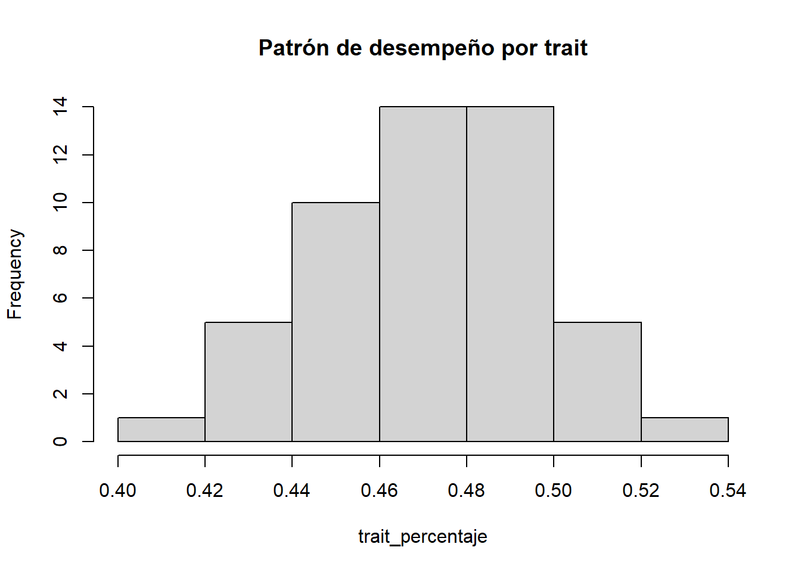
$breaks
[1] 0.40 0.42 0.44 0.46 0.48 0.50 0.52 0.54
$counts
[1] 1 5 10 14 14 5 1
$density
[1] 1 5 10 14 14 5 1
$mids
[1] 0.41 0.43 0.45 0.47 0.49 0.51 0.53
$xname
[1] "trait_percentaje"
$equidist
[1] TRUE
attr(,"class")
[1] "histogram"# plot para menores de edad con ADHD
create_plot(subset(adhd_data, edad < 18 & adhdstatus==1))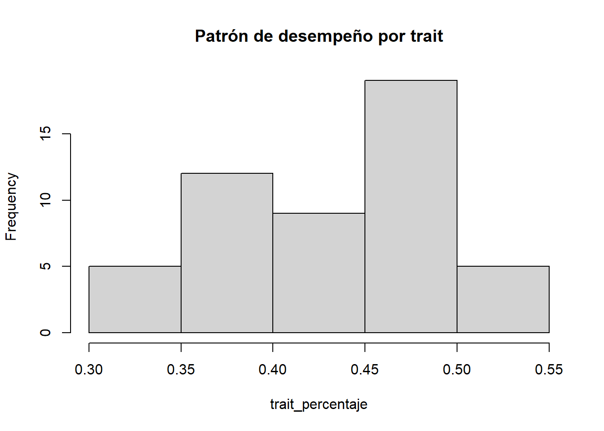
$breaks
[1] 0.30 0.35 0.40 0.45 0.50 0.55
$counts
[1] 5 12 9 19 5
$density
[1] 2.0 4.8 3.6 7.6 2.0
$mids
[1] 0.325 0.375 0.425 0.475 0.525
$xname
[1] "trait_percentaje"
$equidist
[1] TRUE
attr(,"class")
[1] "histogram"# plot para mayores de edad con ADHD
create_plot(subset(adhd_data, edad >= 18 & adhdstatus==0))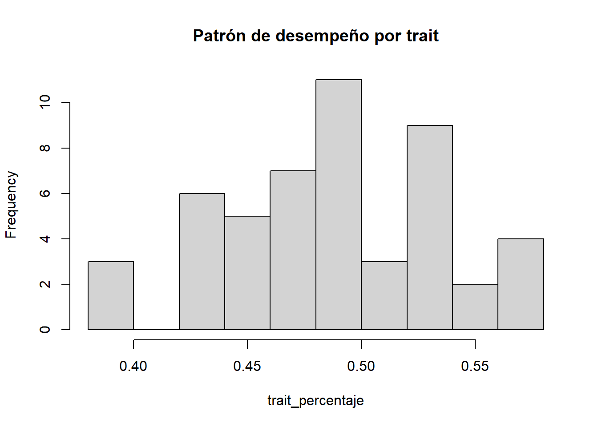
$breaks
[1] 0.38 0.40 0.42 0.44 0.46 0.48 0.50 0.52 0.54 0.56 0.58
$counts
[1] 3 0 6 5 7 11 3 9 2 4
$density
[1] 3 0 6 5 7 11 3 9 2 4
$mids
[1] 0.39 0.41 0.43 0.45 0.47 0.49 0.51 0.53 0.55 0.57
$xname
[1] "trait_percentaje"
$equidist
[1] TRUE
attr(,"class")
[1] "histogram"# plot para menores de edad con ADHD para el sexo masculino
create_plot(subset(adhd_data, edad < 18 & adhdstatus==1 & sexo=="M"))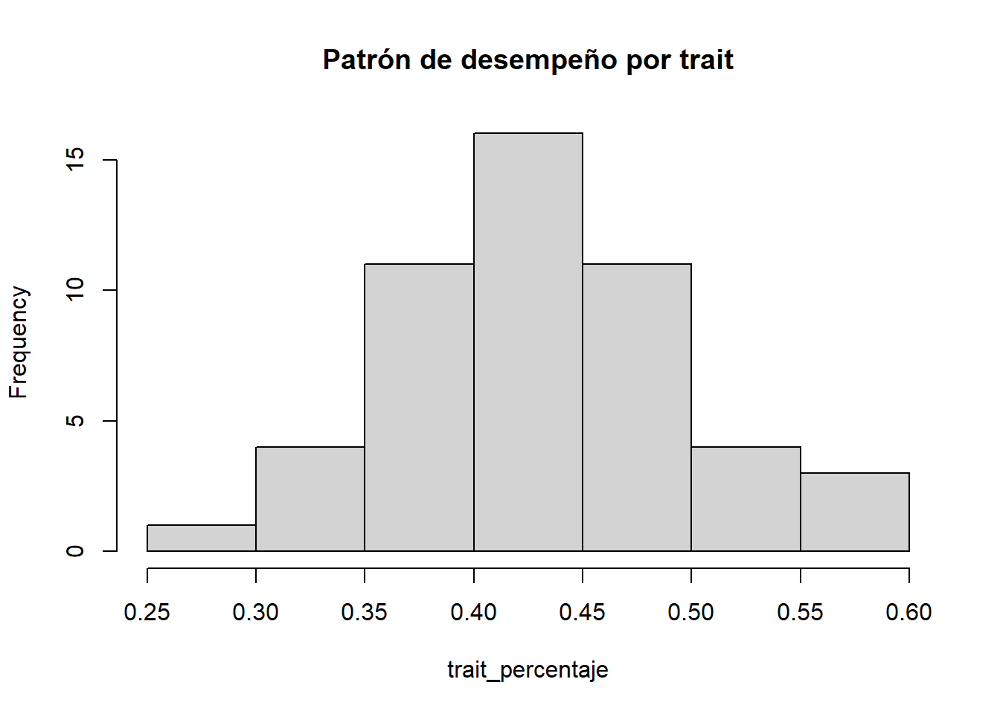
$breaks
[1] 0.25 0.30 0.35 0.40 0.45 0.50 0.55 0.60
$counts
[1] 1 4 11 16 11 4 3
$density
[1] 0.4 1.6 4.4 6.4 4.4 1.6 1.2
$mids
[1] 0.275 0.325 0.375 0.425 0.475 0.525 0.575
$xname
[1] "trait_percentaje"
$equidist
[1] TRUE
attr(,"class")
[1] "histogram"# plot para menores de edad sin ADHD para el sexo femenino
create_plot(subset(adhd_data, edad < 18 & adhdstatus==1 & sexo=="F"))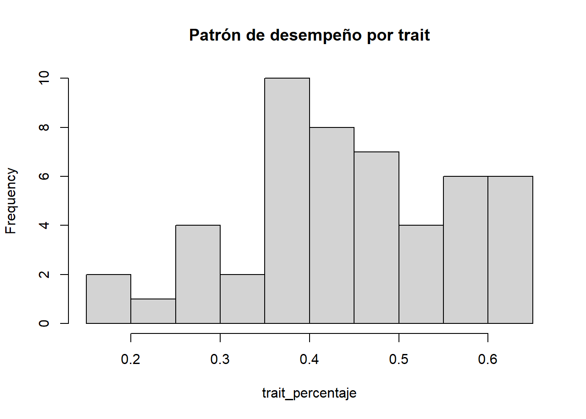
$breaks
[1] 0.15 0.20 0.25 0.30 0.35 0.40 0.45 0.50 0.55 0.60 0.65
$counts
[1] 2 1 4 2 10 8 7 4 6 6
$density
[1] 0.8 0.4 1.6 0.8 4.0 3.2 2.8 1.6 2.4 2.4
$mids
[1] 0.175 0.225 0.275 0.325 0.375 0.425 0.475 0.525 0.575 0.625
$xname
[1] "trait_percentaje"
$equidist
[1] TRUE
attr(,"class")
[1] "histogram"Determine el número de aciertos por participante. Estudie la distribución por género, y diagnóstico de ADHD. Podemos decir que niños con ina e hyp se comportan de la misma forma?. Concluya sin necesidad de realizar una prueba de hipótesis.
Respuesta. Aquí escribe la respuesta.
## aquí va el código
adhd_data$n_aciertos <- rowSums(subset(adhd_data, select = c(trait_A1:trait_A50))==5)
hist(adhd_data$n_aciertos, main = "Número de aciertos")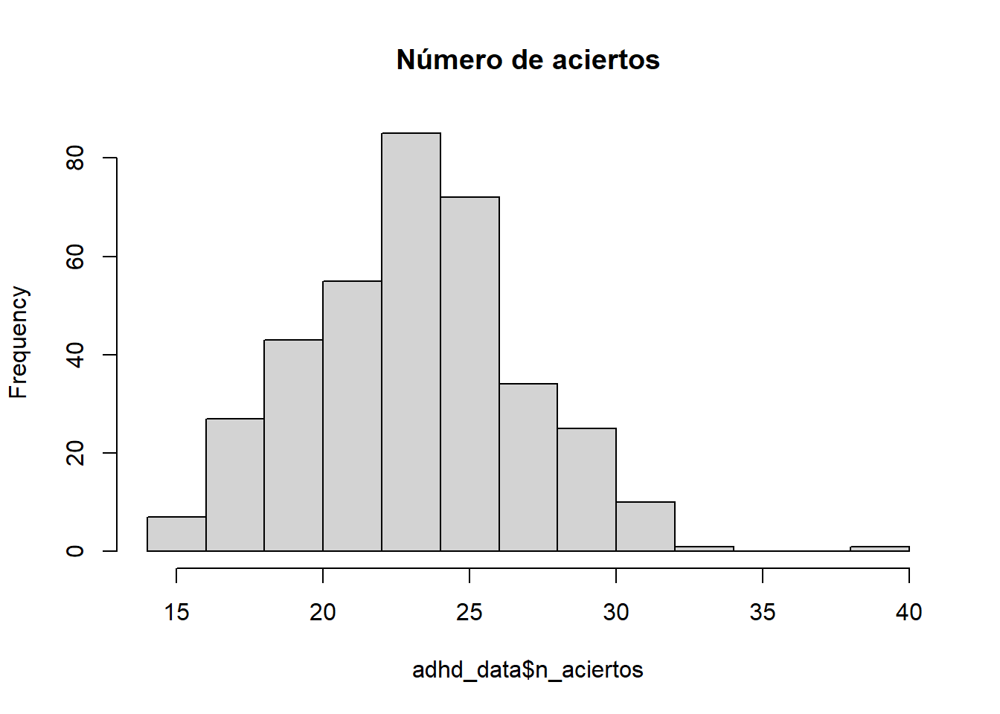
hist(subset(adhd_data, sexo=="M")$n_aciertos, main = "Número de aciertos")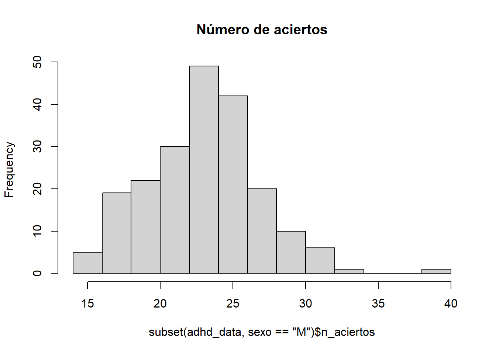
hist(subset(adhd_data, sexo=="F")$n_aciertos, main = "Número de aciertos")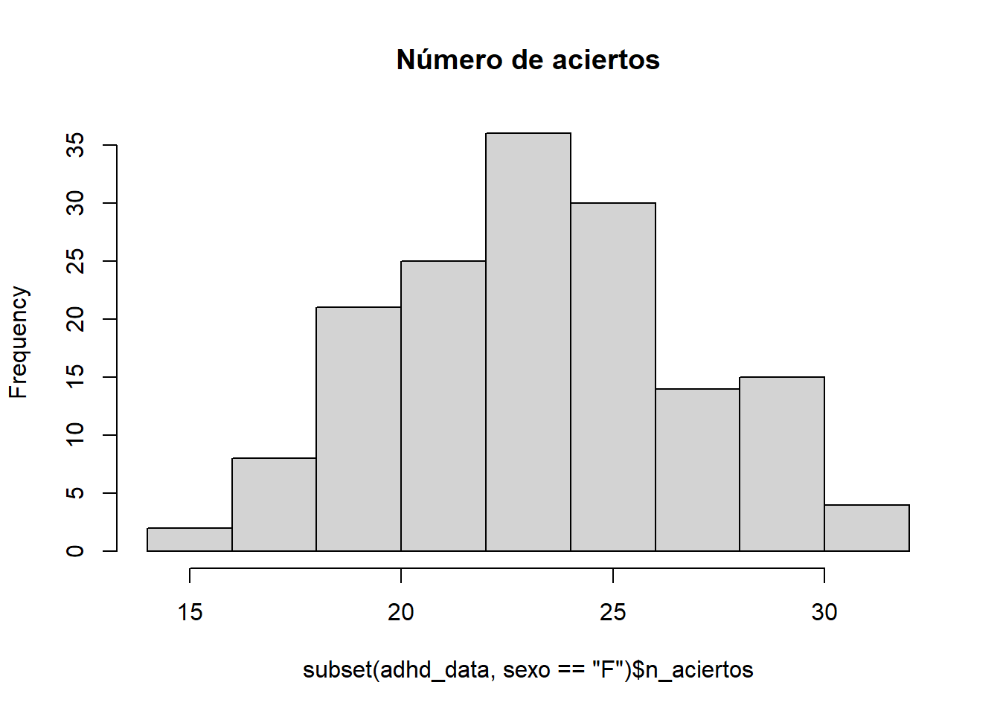
Suponga que la respuesta de un individuo puede resumirse en el siguiente string:
## string de 0s y 1s
v <- "01000111111101100100001110100111100110000111001110"Construya una función que permita calcular la entropía de Shannon a partir del objeto v que contiene 0s y 1s. Hint: Consulte las funciones strsplit(), table() y prop.table().
find_entropy <- function(vector){
frequency_table <- table(strsplit(vector, ""))
len <- nchar(vector)
entropy <- -sum((frequency_table/len) * log2(frequency_table/len))
return(entropy)
}
find_entropy(v)[1] 0.9953784Calcule la entropía \(H\) para cada individuo. Estudie la distribución de \(H\)_1, H_2,, H_n$ por sexo y dignóstico de ADHD. Qué observa?
Respuesta. Aquí escribe la respuesta.
## aquí va el código
adhd_data$respuestas <- apply((subset(adhd_data, select = c(trait_A1:trait_A50)) == 5)*1, 1, function(x) as.character(paste(x, collapse = "")))
# Se utiliza sapply para aplicar la función y además, regresar un resultados simplificado (un número)
adhd_data$entropia <- sapply(adhd_data$respuestas, find_entropy)
##
hist(subset(adhd_data, sexo=="F")$entropia, main = "Entropía")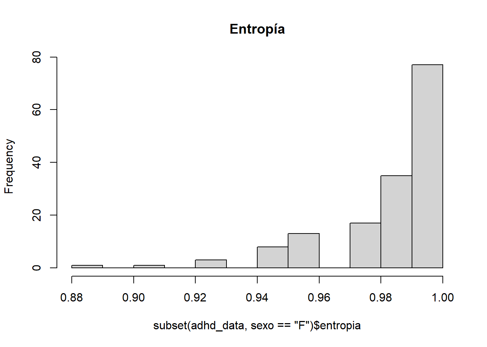
hist(subset(adhd_data, sexo=="M")$entropia, main = "Entropía")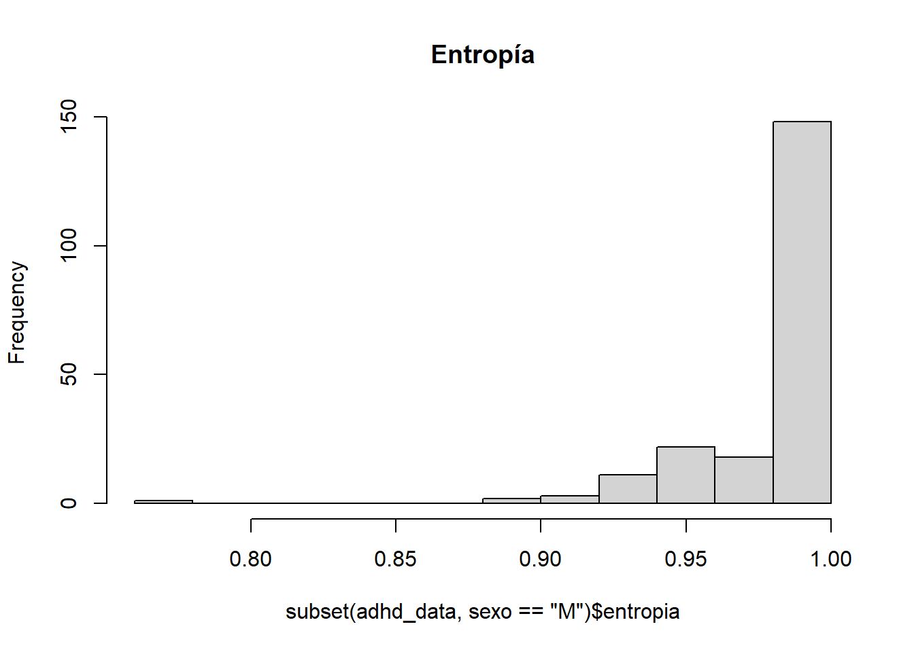
hist(subset(adhd_data, adhdstatus==0)$entropia, main = "Entropía")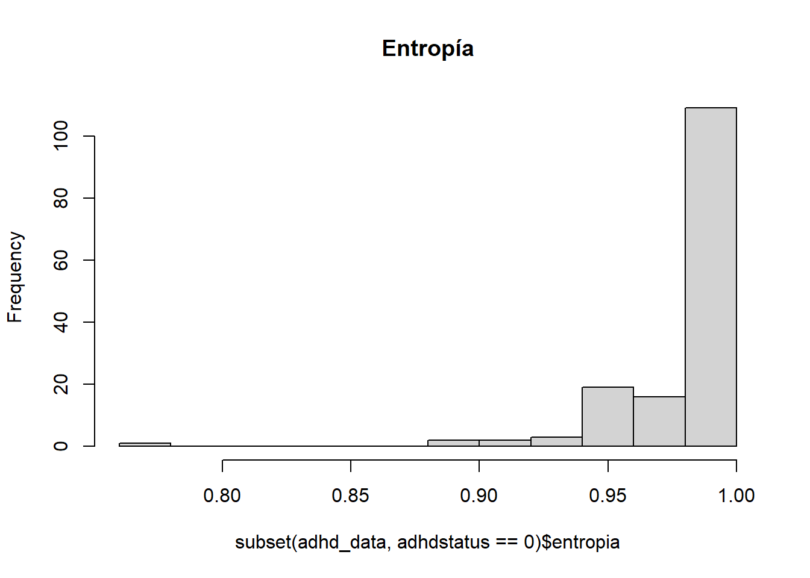
hist(subset(adhd_data, adhdstatus==1)$entropia, main = "Entropía")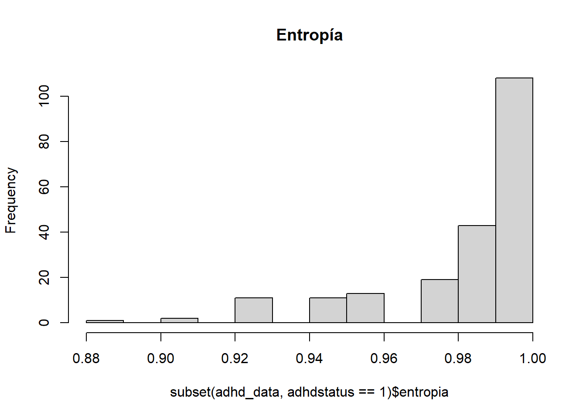
Conside el vector v anterior. Construya una función que calcule el número de 0s y 1s, además de la racha más larga de 0s y 1s, el número de cambios de estado. Hint: Para las rachas, explore la función rle(). En el caso de los cambios de estado, pensar en una matriz de transición podría ayudar. Tenga en cuenta que dicha matriz es de orden \(2\times 2\).
Respuesta. Aquí escribe la respuesta.
## Se segmenta las funciones, una para matriz de transición y otra para obtener todos los parámetros requeridos
get_matriz_transicion <- function(str_vector){
vector <- as.integer(strsplit(str_vector, "")[[1]])
estados <- unique(vector)
n_estados <- length(estados)
matriz_transicion <- matrix(0, nrow = n_estados, ncol = n_estados, dimnames = list(estados, estados))
for (i in 1:(length(vector) - 1)) {
estado_actual <- vector[i]
estado_siguiente <- vector[i + 1]
matriz_transicion[estado_actual+1, estado_siguiente+1] <- matriz_transicion[estado_actual+1, estado_siguiente+1] + 1
}
return(matriz_transicion)
}
describir_vector <- function(str_vector){
vector <- as.integer(strsplit(str_vector, "")[[1]])
rle_vector <- rle(vector)
#Números de ceros y unos
n_ceros <- sum(vector==0)
n_unos <- sum(vector==1)
# Rachas
max_ceros <- max(rle_vector$lengths[rle_vector$values == 0])
max_unos <- max(rle_vector$lengths[rle_vector$values == 1])
#Matriz de transición(cambios de estado)
matriz_transicion = get_matriz_transicion(str_vector)
cambios_estados <- sum(matriz_transicion) - sum(diag(matriz_transicion))
#output
resultados <- list("num_ceros" = n_ceros, "num_unos" = n_unos, "max_racha_ceros" = max_ceros,"max_racha_ceros" =max_unos, "cambios_estados" = cambios_estados)
return(resultados)
}
describir_vector(v)$num_ceros
[1] 23
$num_unos
[1] 27
$max_racha_ceros
[1] 4
$max_racha_ceros
[1] 7
$cambios_estados
[1] 20Construya la matriz de transición para el individuo 83. Calcule \[P(s+1 = j | s = i)\] donde \(s\) es el intento e \(i,j=\{\)0,1\(\}\). Defina esta matriz de probabilidades como \(\mathbf{P}^{(1)}\). Tenga en cuenta que \(\mathbf{P}^{(1)}\) es de dimensión \(2\times 2\).
Respuesta. Aquí escribe la respuesta.
La matriz de probabilidades para esto, representan la probabilidad condicional de cambios de estados en un sólo paso, por tanto, puede ser determinada así:
## Calculamos la matriz de transición:
matriz_transicion_83 = get_matriz_transicion(adhd_data[83,"respuestas"])
P_matriz_83 = matriz_transicion_83 / rowSums(matriz_transicion_83)
P_matriz_83 0 1
0 0.4814815 0.5185185
1 0.6363636 0.3636364Ahrora, bien nos piden \(P(s+1 = j | s = i)\) cuando \(s\) es \(i,j=\{\)0,1\(\}\), esto es:
P_matriz_83[1,2][1] 0.5185185Construya la matriz de transición en el paso \(k\) utilizando la propiedad de Markov para matrices de transición, esto es
\[ \mathbf{P}^{(k)}_M = \underset{k\text{-veces}}{\underbrace{\mathbf{P}^{(1)}\times \mathbf{P}^{(1)}\times\mathbf{P}^{(1)}\times\cdots\times\mathbf{P}^{(1)}}} \]
En la expresión anterior, \(M\) indica que se está utilizando la propiedad de Markov para matrices de transición, y el símbolo \(\times\) se refiere a multiplicación matricial y no a potencias.
Respuesta. Aquí escribe la respuesta.
transicion_matriz_paso_k <- function(str_vector, k) {
matriz_transicion <- get_matriz_transicion(str_vector)
matriz_transicion_paso_1 <- matriz_transicion / rowSums(matriz_transicion)
matriz_paso_k <- matriz_transicion_paso_1
if (k <= 1){
return(matriz_paso_k)
} else {
for (i in 2:k) {
matriz_paso_k <- matriz_paso_k %*% matriz_transicion_paso_1
}
return(matriz_paso_k)
}
}
# la matriz
transicion_matriz_paso_k(adhd_data[83,"respuestas"], 100) 0 1
0 0.5510204 0.4489796
1 0.5510204 0.4489796Calcule \(\mathbf{P}^{(k)}\) como \(P(s+k = j | s = i)\) para \(k=\{1,2,3,4\}\) siguiendo la misma lógica de P7.
for (k in 1:4){
P <- transicion_matriz_paso_k(adhd_data[83,"respuestas"], k)[1,2]
print(paste("La probabilidad cuando i = 0, j = 1 y k=",k,"es:", P))
}[1] "La probabilidad cuando i = 0, j = 1 y k= 1 es: 0.518518518518518"
[1] "La probabilidad cuando i = 0, j = 1 y k= 2 es: 0.438209253024068"
[1] "La probabilidad cuando i = 0, j = 1 y k= 3 es: 0.450647725120851"
[1] "La probabilidad cuando i = 0, j = 1 y k= 4 es: 0.44872122775906"Compare el resultado anterior con \(\mathbf{P}^{(k)}_M\) utilizando una prueba \(\chi^2\) para tablas de contingencia. Hint: Consulte la ayuda de la función ?chisq.test y este enlace.
Respuesta. Aquí escribe la respuesta.
# Matriz teórica (estable)
matriz_M <- transicion_matriz_paso_k(adhd_data[83,"respuestas"], 6)[1,]
vector_teortico <- as.vector(matriz_M)
for (k in 1:6) {
matriz_k <- transicion_matriz_paso_k(adhd_data[83,"respuestas"], k)[1,]
vector_k <- as.vector(matriz_k)
chi_square_test <- chisq.test(vector_k, p = vector_teortico)
print(chi_square_test)
}Warning in chisq.test(vector_k, p = vector_teortico): Chi-squared approximation
may be incorrect
Chi-squared test for given probabilities
data: vector_k
X-squared = 0.01955, df = 1, p-value = 0.8888Warning in chisq.test(vector_k, p = vector_teortico): Chi-squared approximation
may be incorrect
Chi-squared test for given probabilities
data: vector_k
X-squared = 0.00046834, df = 1, p-value = 0.9827Warning in chisq.test(vector_k, p = vector_teortico): Chi-squared approximation
may be incorrect
Chi-squared test for given probabilities
data: vector_k
X-squared = 1.1332e-05, df = 1, p-value = 0.9973Warning in chisq.test(vector_k, p = vector_teortico): Chi-squared approximation
may be incorrect
Chi-squared test for given probabilities
data: vector_k
X-squared = 2.5703e-07, df = 1, p-value = 0.9996Warning in chisq.test(vector_k, p = vector_teortico): Chi-squared approximation
may be incorrect
Chi-squared test for given probabilities
data: vector_k
X-squared = 8.6328e-09, df = 1, p-value = 0.9999Warning in chisq.test(vector_k, p = vector_teortico): Chi-squared approximation
may be incorrect
Chi-squared test for given probabilities
data: vector_k
X-squared = 4.9823e-32, df = 1, p-value = 1